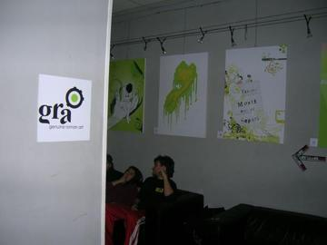
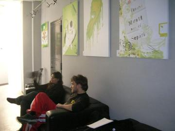

2006 · Principale · Tema/Colore
Tema/Colore 04
Virus / Verde
Opere 13


La serata 2 foto




Artisti 13
Clio CrescenteEleonora BosiElisabetta PalloneFabio ArmidaFrancesco BellonGaspare LombardoGinevra Virgili · gin°Liza Marie CalestiniMiriam Tognella · Disorder DesignRoberta Rizzi · RoRiStefano Longo · thisisstupidValentina TataValerio Spinelli
GRA — Genuine Roman Art · RomaOpere © i rispettivi autori